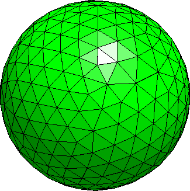
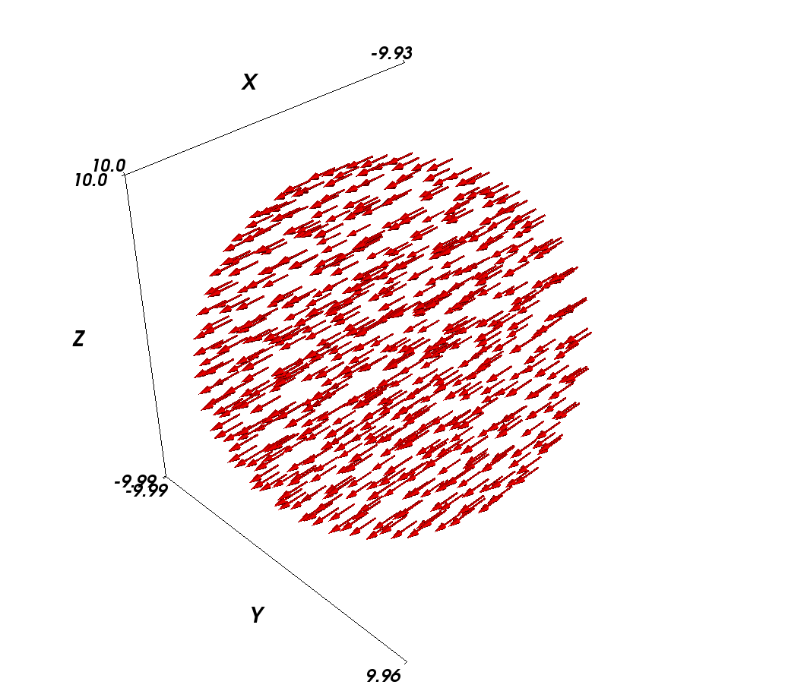
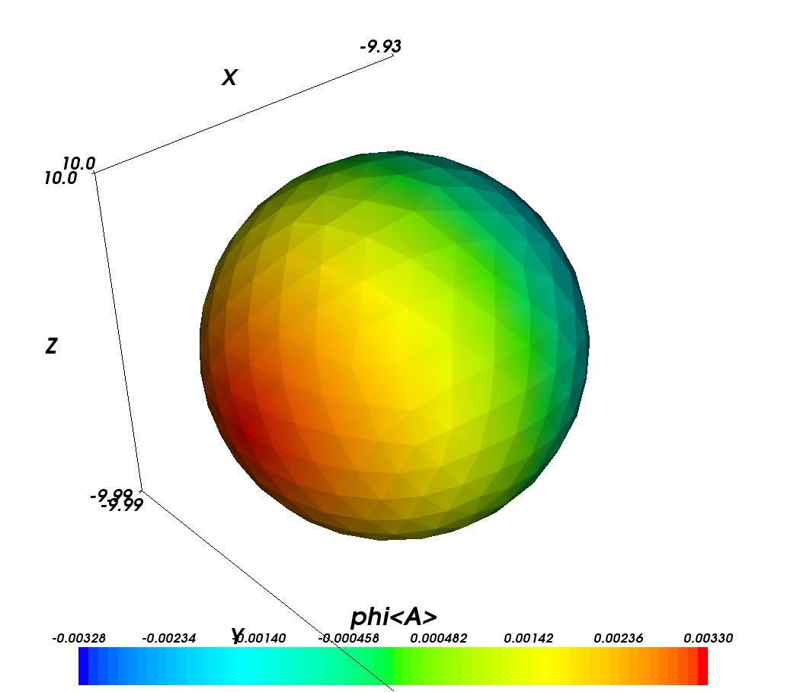

2.1. Example: Demag field in uniformly magnetised sphere¶
This is the most basic example that computes the demagnetisation field in an uniformly magnetised sphere. For this simple system, the exact result is known analytically: the demag field vector has to be equal to minus one-third of the magnetisation vector, everywhere.
When using finite element calculations, a crucial (and non-trivial) part of the work is the finite element mesh generation. We provide a very small mesh for this example (sphere1.nmesh.h5) which was generated with Netgen (from this geometry file). This gives us a sphere of radius 10nm.
We can then use the following nmag script sphere1.py:
import nmag from nmag import SI #create simulation object sim = nmag.Simulation() # define magnetic material Py = nmag.MagMaterial(name = 'Py', Ms = SI(1e6, 'A/m'), exchange_coupling = SI(13.0e-12, 'J/m')) # load mesh sim.load_mesh('sphere1.nmesh.h5', [('sphere', Py)], unit_length = SI(1e-9, 'm')) # set initial magnetisation sim.set_m([1,0,0]) # set external field sim.set_H_ext([0,0,0], SI('A/m')) # Save and display data in a variety of ways sim.save_data(fields='all') # save all fields spatially resolved # together with average data # sample demag field through sphere for i in range(-10,11): x = i*1e-9 #position in metres H_demag = sim.probe_subfield_siv('H_demag', [x,0,0]) print "x =", x, ": H_demag = ", H_demag
To execute this script, we have to give its name to the nsim executable, for example (on linux):
$ nsim sphere1.py
Some simulations produce output files which nsim will refuse to overwrite when run for a second time. The rationale is that big simulations may have to run for a long time and so, there should be a safeguard against accidental destruction of data.
In order to re-run a simulation, removing all old output data files, the extra option --clean should be given, as in:
$ nsim sphere1.py --clean
Let us discuss the sphere1.py script step by step.
2.1.1. Importing nmag¶
First we need to import the nmag module, and any subpackages of nmag that we want to use. (In this basic example, this is just the SI module for dimensionful physical quantities).
import nmag
from nmag import SI
2.1.2. Creating the simulation object¶
Next, we need to create a simulation object. This will contain and provide information about our physical system.
sim = nmag.Simulation()
2.1.3. Defining (magnetic) materials¶
After importing the nmag module into Python’s workspace and creating the simulation object sim, we need to define a material using nmag.MagMaterial. We give it a name (as a Python string) which in this case we choose to be "Py" (a common abbreviation for PermAlloy) and we assign a saturation magnetisation and an exchange coupling strength.
Py = nmag.MagMaterial(name = 'Py',
Ms = SI(1e6, 'A/m'),
exchange_coupling = SI(13.0e-12, 'J/m'))
The name of the material is important, as we may want to simulate systems made up of multiple different materials, and the material name will be used as a postfix to the name of some Fields and subfields. The output files will also use that name to label output data. Names must be alphanumeric (i.e. formed exclusively out of the characters in the set 0-9\_a-zA-Z) here.
Rather than representing dimensionful physical quantities as numbers, nmag uses a special object class, the “SI object”. The underlying rationale is that this allows automated detection of mismatches of physical dimensions. If some physical parameter is given to nmag in a dimension different from the expected one, nmag will detect this and report an error. Also, any nmag output [e.g. a three-dimensional VTK visualisation file] will provide a sufficient amount of contextual information to clarify the physical meaning (i.e. dimensions) of numerical data.
We thus express the saturation magnetisation in Ampere per meter (Ms = SI(1e6,"A/m")) and the exchange coupling constant (often called A in micromagnetism) in Joules per meter (exchange_coupling = SI(13.0e-12, "J/m")). (Note that these are not the true physical parameters of PermAlloy, but have been chosen ad hoc for the sake of providing a simple example!)
2.1.4. Loading the mesh¶
The next step is to load the mesh.
sim.load_mesh('sphere1.nmesh.h5',
[('sphere', Py)],
unit_length = SI(1e-9, 'm'))
The first argument is the file name ("sphere1.nmesh.h5"). The second argument is a list of tuples which describe the domains (also called regions) within the mesh. In this example we have a one-element list containing the 2-tuple ("sphere", Py). The left element of this pair, "sphere", is a string (of the user’s choice) and this is the name given to mesh region 1 (i.e. the space occupied by all simplices that have the region id 1 in the mesh file).
[This information is currently only used for debugging purposes (such as when printing the simulation object).]
The second part of the tuple is the MagMaterial object that has been created in Defining (magnetic) materials and bound to the variable Py. This object determines the material properties of the material in this domain; in this example, we have specified the properties of PermAlloy.
The third argument to load_mesh is an SI object which defines what physical distance should be associated with the length 1.0 as given in the mesh file. In this example, the mesh has been created in nanometers, i.e. the distance 1.0 in the mesh file should correspond to 1 nanometer in the real world. We thus use a SI object representing 1 nm.
2.1.5. Setting the initial magnetisation¶
To set the initial magnetisation, we use the set_m method.
sim.set_m([1,0,0])
The field m describes the direction of magnetisation (as a field of normalised vectors) whereas the field M contains the magnetisation with its proper magnitude. So, |M| is the saturation magnetisation (in Amperes per meter), whereas m is dimensionless with |m|=1.0. There are different ways to set a particular magnetisation, in the simplest case of a homogeneously magnetised body, it is sufficient to provide the magnetisation vector. So, in this example, we provide a unit vector pointing in positive x-direction. (We could provide a vector with non-normalised magnitude, which would be normalised automatically. This is convenient for, say, setting an initial magnetisation in the x-y-plane with a 45 degree angle towards the x axis by specifying [1,1,0]).
2.1.6. Setting the external field¶
We can set the external field using the set_H_ext command
sim.set_H_ext([0,0,0], SI('A/m'))
In contrast to set_m, this method takes two arguments. The first defines numerical values for the direction and magnitude of the external field. The second determines the meaning of these numerical values using an SI object. Suppose we would like an external field of 1e6 A/m acting in the y-direction, then the command would read: sim.set_H_ext([0,1e6,0],SI(1,"A/m")). However, we could also use sim.set_H_ext([0,1,0],SI(1e6,"A/m")).
The default value for the external field is [0,0,0] A/m, so for this example, we could have omitted the set_H_ext command altogether.
2.1.7. Extracting and saving data¶
We have three different ways of extracting data from the simulation:
- saving averaged values of fields (which can be analysed later)
- saving spatially resolved fields (which can be analysed later)
- extracting field values at arbitrary positions from within the running program
In this basic example, we demonstrate the use of all three methods:
2.1.7.1. Saving averaged data¶
sim.save_data()
The save_data method writes (spatial) averages of all fields (see Fields and subfields) into a text file (which will be named sphere1_dat.ndt, see below). This file is best analysed using the ncol tool but can also just be read with a text editor. The format follows OOMMF’s odt file format: every row corresponds to one snapshot of the system (see save_data).
The function can also be called with parameters to save spatially resolved field data (see Saving spatially resolved data).
The first and second line in the data file are headers that explain (by column) the physical quantities (and their dimensions).
The ncol tool allows to extract particular columns easily so that these can be plotted later (useful for hysteresis loop studies). In this example we have only one “timestep”: there only is one row of data in this file. We will therefore discuss this in more detail in a subsequent example.
2.1.7.2. Extracting arbitrary data from the running program¶
The line
H_demag = sim.probe_subfield_siv( 'H_demag', [x,0,0] )
obtains the demagnetisation field (see Fields and Subfields in Nmag) at position (x,0,0). The suffix “_siv” to this function means that both positions and return values will be given as SI values.
The for-loop in the program (which iterates x in the range from -10*1e-9 to 10*1e-9 in steps of 1e-9) produces the following output
x = -1e-08 : H_demag = None
x = -9e-09 : H_demag = [-329655.76203912671, 130.62999726469423, 194.84338557811344]
x = -8e-09 : H_demag = [-329781.46587966662, 66.963624669268853, 137.47161381890737]
x = -7e-09 : H_demag = [-329838.57852402801, 181.46249265908259, 160.61298054099865]
x = -6e-09 : H_demag = [-329899.63327447395, 131.06488858715838, 71.383139326493094]
x = -5e-09 : H_demag = [-329967.79622912291, 82.209856975234786, -16.893046828024836]
x = -4e-09 : H_demag = [-329994.67306536058, 61.622521557150371, -34.433041910642359]
x = -3e-09 : H_demag = [-329997.62759666931, 23.222244635691535, -65.991127111463769]
x = -2e-09 : H_demag = [-330013.90370482224, 10.11035370824321, -61.358763616681067]
x = -1e-09 : H_demag = [-330023.50844056415, -6.9714476825652287, -54.900260456937708]
x = 0.0 : H_demag = [-330030.98847923806, -26.808832466764223, -48.465748009067141]
x = 1e-09 : H_demag = [-330062.38479507214, -38.660812022013424, -42.83439139610747]
x = 2e-09 : H_demag = [-330093.78111090627, -50.512791577262625, -37.2030347831478]
x = 3e-09 : H_demag = [-330150.72580001026, -64.552170478617398, -23.120555702674721]
x = 4e-09 : H_demag = [-330226.19050178828, -77.236085707456397, -5.5373829923226916]
x = 5e-09 : H_demag = [-330304.59300913941, -90.584413821813229, 14.090609104026118]
x = 6e-09 : H_demag = [-330380.1392610991, -115.83746059068679, 37.072085708324757]
x = 7e-09 : H_demag = [-330418.85831447819, -122.47512022500726, 62.379121138009992]
x = 8e-09 : H_demag = [-330476.40747455234, -110.84257225592108, 108.06217226524763]
x = 9e-09 : H_demag = [-330500.20126762061, -68.175725285038382, 162.46166752217249]
x = 1e-08 : H_demag = [-330517.86675206106, -24.351273685146875, 214.40344001233677]
At position -1e-8, there is no field defined (this point lies just outside our sphere-mesh) and therefore the value None is returned.
We can see how the demagnetisation field varies slightly throughout the sphere. The x-component is approximately a third of the magnetisation, and the y- and z-components are close to zero (as would be expected for a perfectly round sphere).
We mention for completeness that most fields (such as magnetisation, exchange field, anisotropy field etc) are only defined within the region(s) occupied by magnetic material. However, there is a special function probe_H_demag_siv to probe the demagnetisation field anywhere in space.
2.1.7.3. Saving spatially resolved data¶
The command
sim.save_data(fields='all')
will save full spatially resolved data on all fields (see Fields and subfields) for the current configuration into a file with name sphere1_dat.h5. (It will also save the spatially averaged values as described in Saving averaged data.) Whenever the save_data function is called, it will write the averaged field values into the Data files (.ndt) file. This name is, by default, based on the name of the simulation script, but can be overridden with an optional argument to the Simulation constructor. The data in this file are kept in some compressed binary format (built on the hdf5 standard) and can be extracted and converted later using the nmagpp tool.
For example, we can extract the magnetisation field from this file with the command:
$ nmagpp --dump sphere1
However, here we are interested in creating a vtk from the saved data file for visualisation. We use:
$ nmagpp --vtk sphere1.vtk sphere1
where sphere1.vtk is the base name of the vtk file that is to be generated.
In this manual, we use MayaVi as the visualisation tool for vtk files but there are others available (see vtk).
Starting MayaVi with the command mayavi -d sphere1-000000.vtk will load our simulation data. Using the pull-down menu Visualize -> Modules -> VelocityVector will then tell MayaVi to display the magnetisation vector field. (Likewise, we can use Visualize -> Modules -> Axes to add a 3d coordinate system to the visualization):
The magnetisation is pointing in positive x-direction because we initialised the magnetisation in this orientation by issuing the command sim.set_m([1,0,0]).
The Configure Data button in the DataVizManager section of MayaVi’s user interface allows to select:
- a vector field and
- a scalar field
which provide the data that is used for subsequent visualisation modules. Above, we have used the m_Py vector field.
The demagnetisation field should point in the opposite direction of the magnetisation. However, let’s first create a colour-coded plot of the scalar magnetic potential, phi, from which the demag field is computed (by taking its negative gradient):
We first need to select phi as the data source for ‘scalar’ visualisation modules: Through clicking on the Configure Data button in the DataVizManager section of MayaVi’s user interface, we can select phi<A> as the data source for scalar visualisations. (The <A> simply indicates that the units of the potential are Ampere).
To show the scalar potential, we use the Visualize->Module->SurfaceMap module.
We can see that the potential varies along the x-direction. The legend at the bottom of the figure shows the colour code used. We can also see from the legend title that the physical dimension of the potential phi is Ampere (this is the <A>).
Unless the user specifies a particular request for physical dimensions, the following rules apply for vtk files:
- position are given in the same coordinates as the mesh coordinates (that is why in this example, the x, y and z axis have values going from -10 to 10).
- all field data are given in SI units.
The next plot shows the demag field (the vectors) together with isosurfaces of the magnetic potential:

It can be seen that the isosurfaces are completely flat planes (i.e. the potential is changing only along x) and the demagnetisation field is perpendicular to the isosurfaces. The color bar on the left refers to the magnitude of the demagnetisation field which is expressed in Ampere per meter, as can be seen from the label <A/m>. (Note that all the H_demag arrows are colored red as they have identical length.)